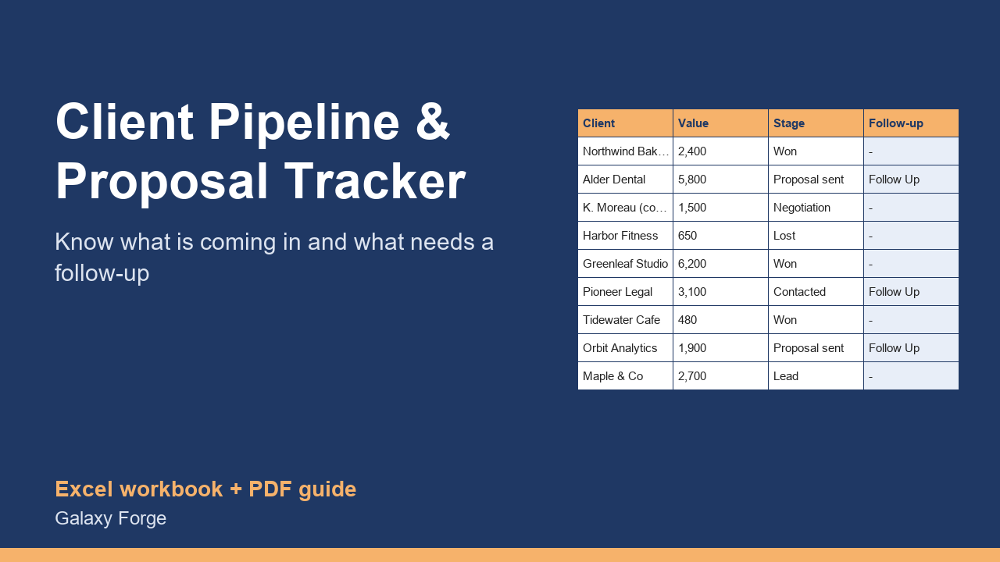

Track every lead and proposal from first contact to won or lost: weighted pipeline value, win rate, follow-ups due, and which lead sources actually bring paying clients.
Freelancers and small agencies lose more work to forgotten follow-ups than to competitors. A proposal goes out, the client goes quiet, and three weeks later the moment has passed. Meanwhile it is hard to say how much work is really in the pipeline, or which marketing actually produces paying clients.
This tracker keeps every lead on one row with its value and stage. It calculates a weighted pipeline value from the probability you give each stage, flags open deals that have not been contacted for longer than your follow-up limit, and reports your win rate, average deal size and results by lead source.
It is deliberately simple: one sheet to update in five minutes after every call, and a summary that answers the questions that matter.
1) Settings: set today's report date, the probability for each stage, and how many days without contact count as overdue. 2) Pipeline: one row per lead: client, source, service, value, stage, first contact date and last contact date. Choose stages exactly as listed on Settings. 3) After every call or email, update Stage and Last contact. 4) Each Monday change the report date, filter FOLLOW UP, and contact those clients. 5) The Summary shows your pipeline, win rate and the sources worth more of your time.
Price: $14, one-time. Download: client_pipeline_proposal_tracker.xlsx (Settings, Pipeline, Summary) and this guide. Works in Excel 2016 or later, Excel for Mac and Excel on the web; opens in Google Sheets and LibreOffice.
New product, listed 2026-10-23: no sales or reviews yet. Example figures in the workbook are illustrative.
This workbook is an organising aid. Weighted values are estimates based on the stage probabilities you set, not forecasts of what will close.